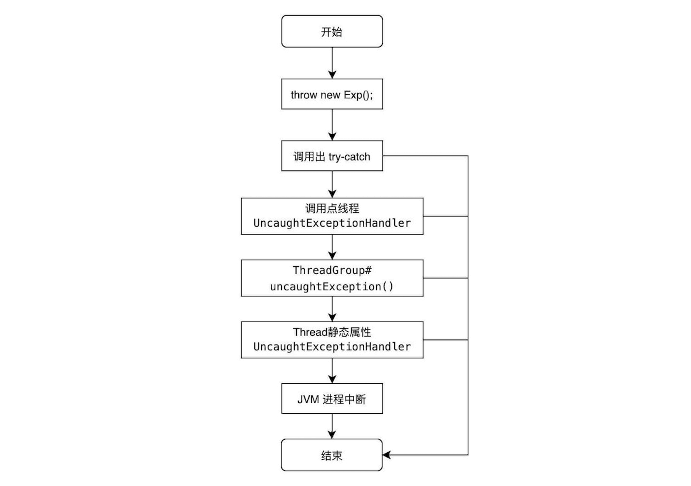

1. 基础语法
1.1 编译运行
配置JDK环境
# 安装OpenJDK
brew install openjdk@11
# 配置.bash_profile，支持手动切换Java版本
JAVA_8_HOME='/usr/local/opt/openjdk@8'
JAVA_11_HOME='/usr/local/opt/openjdk@11'
JAVA_18_HOME='/usr/local/opt/openjdk@18'
export JAVA_HOME=$JAVA_11_HOME
export PATH="$PATH:$JAVA_HOME/bin"
export CPPFLAGS="-I$JAVA_HOME/include"
# Ubuntu中可使用命令切换
sudo update-alternatives --config java
# 查看Java版本
java --version
构建与分析
用javac编译、jar打包解包、javap反编译。
# 批量编译
javac -s <sorceFolder> -d <classFolder> *.java
# 生成jar包, -C 表示打包是忽略该路径前缀
jar -c -f target.jar [-e com.test.Main] -C ./java/main ./
# 解压jar包到当前目录，或使用 unzip target.jar -d ./sub/ 指定解压目录
jar -xf target.jar
# 执行, 注意java -jar时，即使传入classpath也会被忽略
java -classpath <dir/zip/jar> com.test.Main [cmd args]
java -jar main.jar [cmd args]
# 反编译 -c查看反汇编代码，-s查看签名
javap -c Main.class
javap -v -p Main.class
# 若只有单个文件，可快速编译并执行
java Main.java
1.2 数据类型
Java的基本类型在Java方法栈中分配空间，非基本类型在堆中分配空间。
基本数据类型
- 0Byte:
void其装箱类Void不能new实例 - 1Byte:
byte - 2Byte:
char、short - 4Byte:
int、float - 8Byte:
long、double
数组
Java的数组是一种特殊的类：
- 可通过Class对象判断是否数组类型:
obj.getClass().isArray()或obj instanceof int[] - Java的数组是型变的, 即
Integer -|> Object且有Integer[] -|> Object[] - 成员
length保存了数组元素数，成员方法clone()支持数组元素浅克隆
// 推荐使用T[] arr; (而非T arr[]），即可将T[]看成是类型名
// 不会为元素创建对象，即arr[i]==null
Object[] arr = new Object[10];
// 定义时用元素列表初始化时可省略长度值 arr.length==2
Object[] arr = new Object[]{new Object(), new Object()}
类实例初始化顺序
- 类加载阶段:
- 链接阶段: 给静态变量赋默认值
0/false/''/null - 初始化阶段: 在堆中创建Class对象，再执行由静态变量赋值、静态代码块合成的
<cinit>()方法
- 链接阶段: 给静态变量赋默认值
- 对象创建阶段:
- 在Heap中开辟空间，成员初始化为0值
- 顺序将成员显式赋值、构造代码块指令合并插入到各构造方法体中(
super()后) - 执行对应的构造方法
1.3 语句结构
Java除支持常规的分支结构if-else、switch-case、循环结构while、do-while、for(;;)外，还支持：
迭代器循环
对于Iterrable的实现类，支持for-each语法糖：
// 相当于 while(it.hasNext()){ e = it.next(); }
for (Integer e : obj){ }
自动释放资源
对于AutoCloseable的实现类T，支持try(T t = new T())语法糖：
// 相当于在finally块中调用了a.close()方法
try (AutoCloseable a1 = new T(); AutoCloseable a2 = new T()){
}catch (Exception ignore) {}
1.4 异常捕获
Java用throws在方法体前声明受检异常, 用throw在方法体中抛出异常, 用try-catch-finally在调用处捕获异常。
注: 方法复写时, 同返回值可以返回父类声明的相容类型一样，子类也可以声明与抛出父类声明的异常的相容类型。
